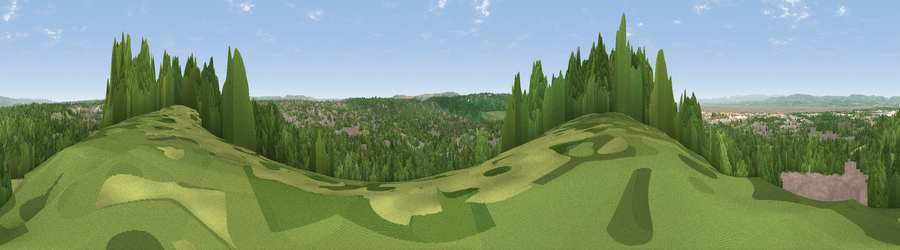

Viewpoint near Hallen
#14678 in England · top 24% of its area beats it · near Hallen · access?Where it is
The exact computed spot (ST 55375 78075). Click the marker for map links.
Public access: no public right of way or access land is recorded at this exact spot — it may be on private land. Computed from Natural England's CRoW access layer and OpenStreetMap rights of way — not the legal definitive map. Always verify locally.
The view, rendered

A 360° render of this exact spot computed from the terrain model, tree cover and land cover — summer colours, afternoon light, calibrated against photographs of famous viewpoints. Real trees, hedges and buildings will differ in detail.
The panorama
Grey silhouette: terrain skyline in each direction (720 bearings, Earth curvature and refraction included). Dashed green: skyline with trees (+15 m) and buildings (+8 m) as obstacles. Blue strip: how far the ground is visible on each bearing.
Where the view opens
Wedge length = distance to the farthest visible ground on that bearing (vegetation-aware). Rings at 10, 25 and 50 km.
What fills the view
49% woodland · 24% grassland · 23% built-up · 2% water · 1% cropland
Angular shares of the visible panorama (visual magnitude), not map area. Landscape diversity 0.52 (0–1 Shannon).
Key numbers
More beautiful places nearby
The staircase of upgrades: each row has a higher view potential than everything closer. Driving times are estimates from straight-line distance, calibrated against real road routing — check an actual route before setting out.
| Place | Direction | Drive | Score |
|---|---|---|---|
| Viewpoint near Hallen | WSW · 0 km | ~2 min | 66.7 |
| Viewpoint near Almondsbury | NE · 7 km | ~14 min | 68.3 |
| Dundry Hill | S · 11 km | ~21 min | 72.4 |
| Viewpoint near Norton Malreward | SSE · 12 km | ~23 min | 72.9 |
| Dial Hill | WSW · 16 km | ~28 min | 74.9 |
| Hanging Hill | ESE · 18 km | ~31 min | 76.4 |
| Beacon Batch | SSW · 22 km | ~36 min | 79.4 |
| Viewpoint near Stinchcombe | NE · 27 km | ~43 min | 80.5 |
51.49984, -2.64427 · source: screening · position refined by local search. Computed location — check access rights before visiting.